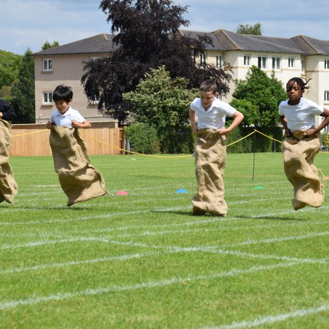
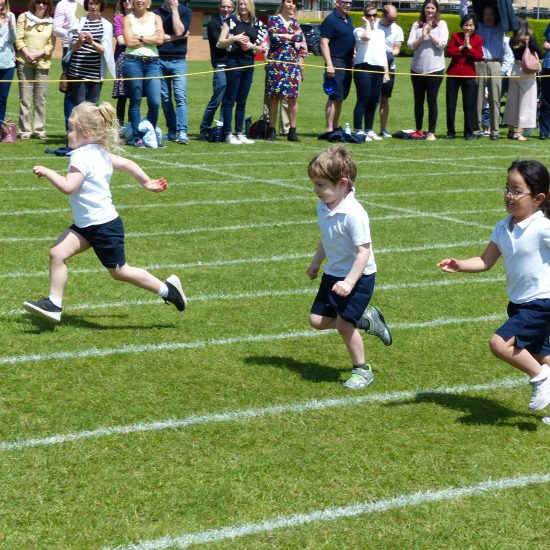
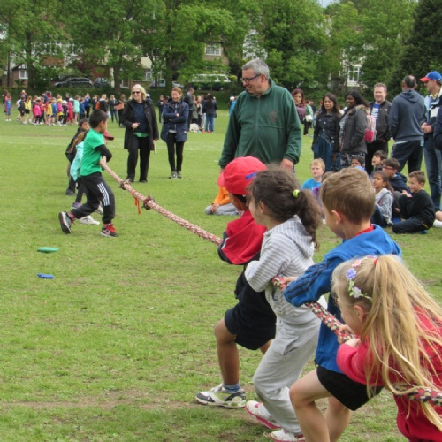

Date: 4 April 2021
Venue: Little Scholar Field
Time : 7.30 a.m - 1.00 p.m
Sports days is event staged by Little Scholar Kindergarten in which students
participate in competitive sporting activities, often with the aim of
winning trophies or prizes.In our kindergarten, we use a house system feature
such as blue, yellow, red and green to represent the students groups;
and they competing in sports program to become a champion.
Games that are played on Little Scholar Kindergarten include:
- 50 metre sprint
- Egg race
- Spoon Race
- Sack Race
- Parent and child race
The champion, runner-up and 3rd place will receive medals and hampers.
  